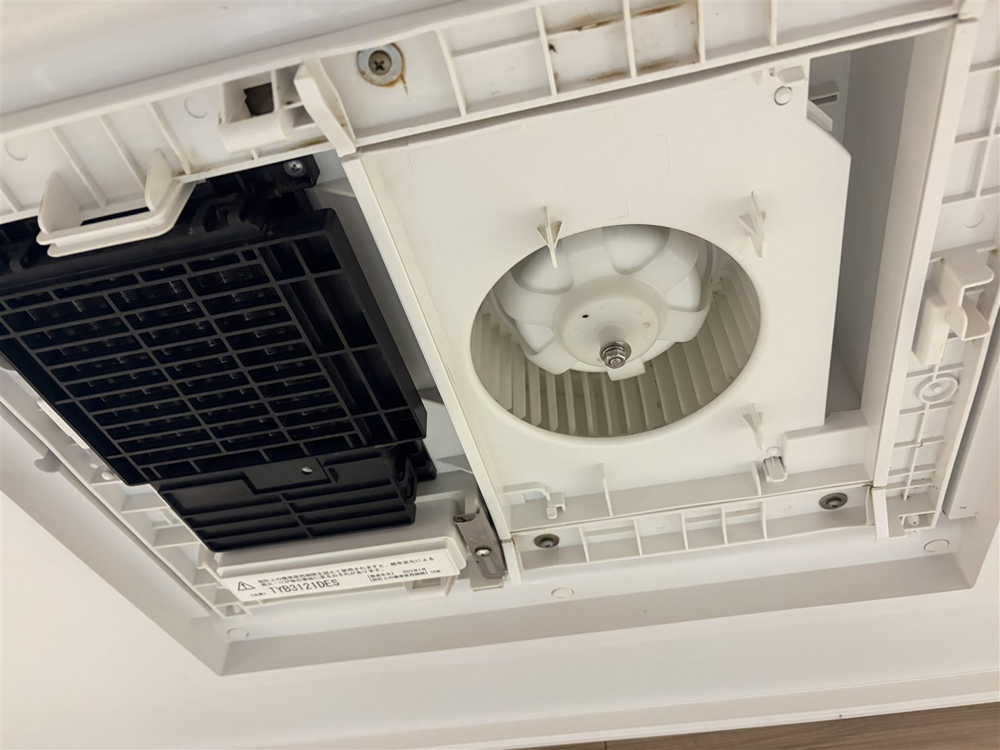
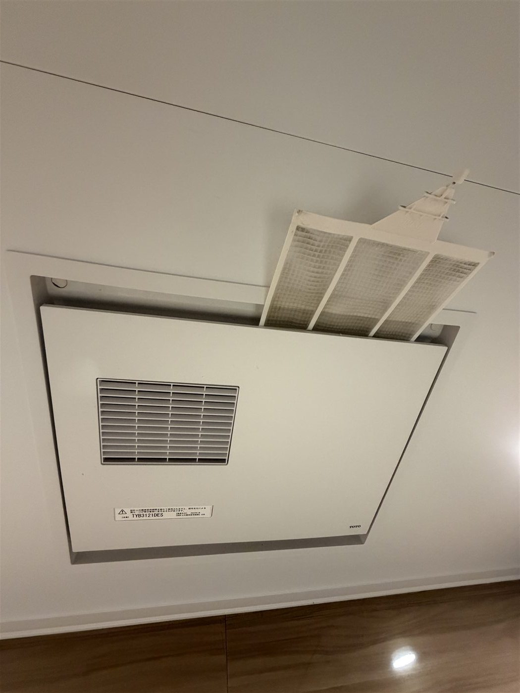
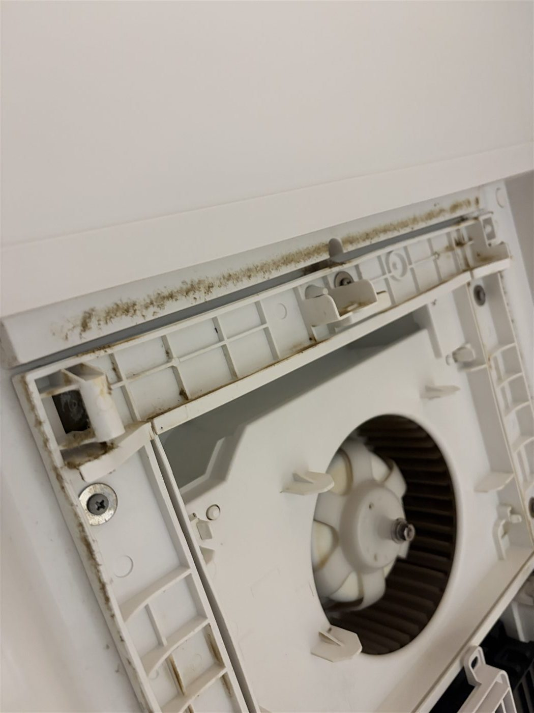
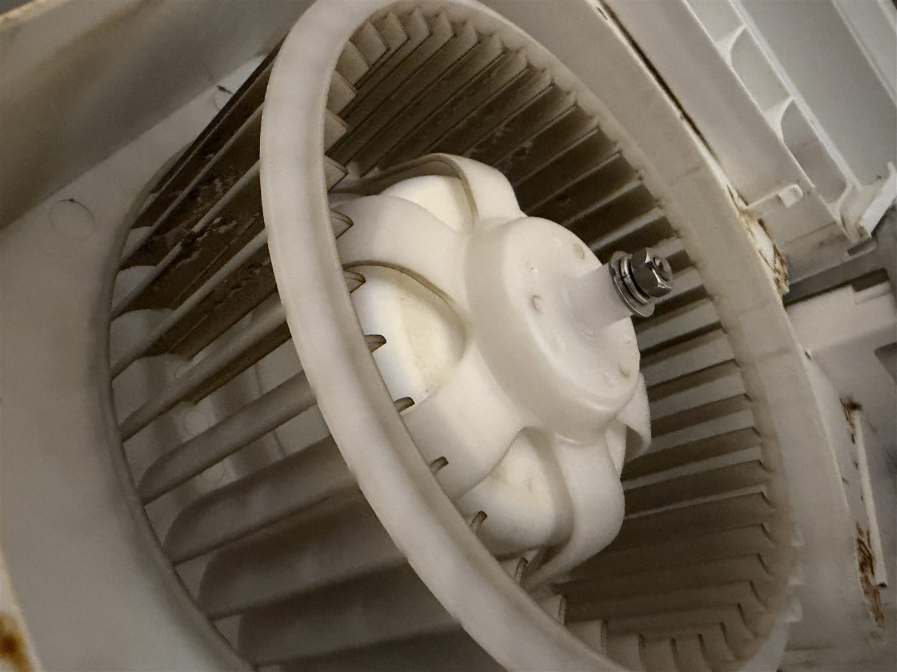
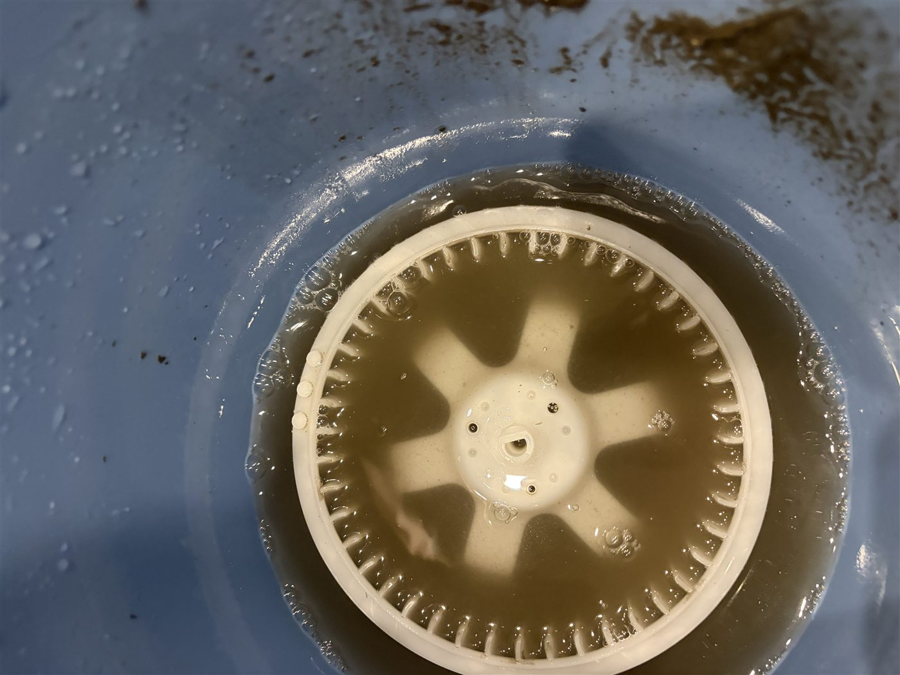
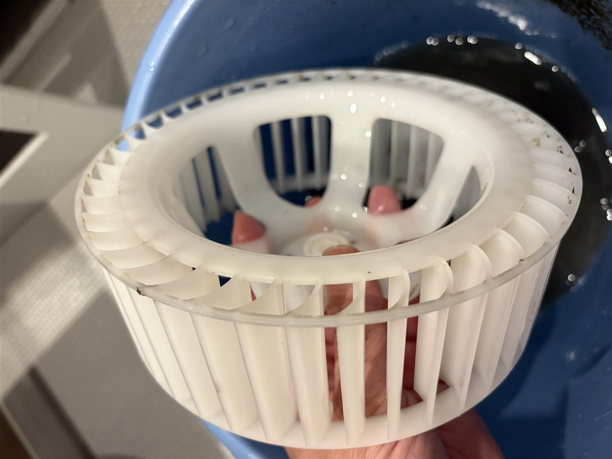

2026-06-17｜住まいの点検
浴室暖房付き換気扇の分解洗浄を行いました
普段はフィルター清掃のみだった浴室暖房付き換気扇を分解し、内部のファンまで洗浄しました。
2026-06-17｜住まいの点検
普段はフィルター清掃のみだった浴室暖房付き換気扇を分解し、内部のファンまで洗浄しました。

浴室暖房付き換気扇は、普段フィルターを掃除していても、内部のファンやカバーの奥に汚れがたまることがあります。今回はカバーを外し、ファン部分まで分解して洗浄しました。
外から見える部分だけでは分かりにくい汚れも、分解してみると想像以上に残っていることがあります。住まいの小さな不具合や汚れは、早めに確認しておくと安心です。





フィルターを定期的に掃除していても、ファンの羽根やカバーの内側までは手が届きにくいものです。湿気の多い浴室では、ホコリや汚れが水分を含んで残りやすくなります。
換気扇、排水、外まわり、庭木など、住まいの気になる場所は少しずつ状態が変わります。大きな修理になる前に、まず現状を確認して写真で残しておくことが大切です。
ご実家や空き家の住まいまわりで、気になる場所の確認や簡易作業についてもご相談ください。
相談窓口へ戻る